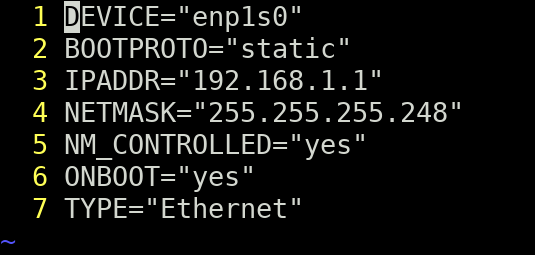
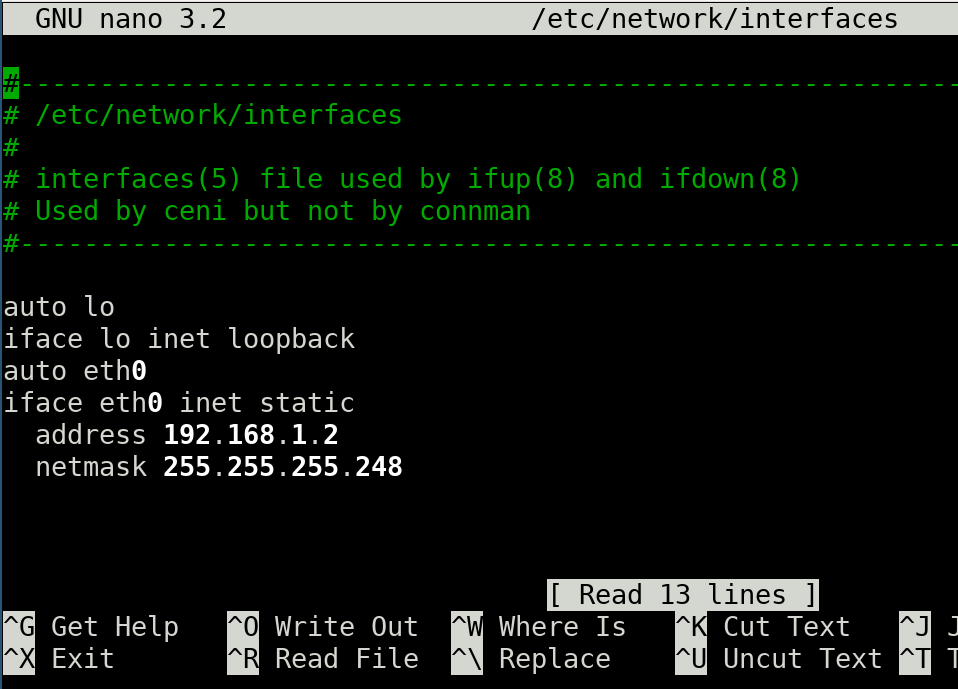
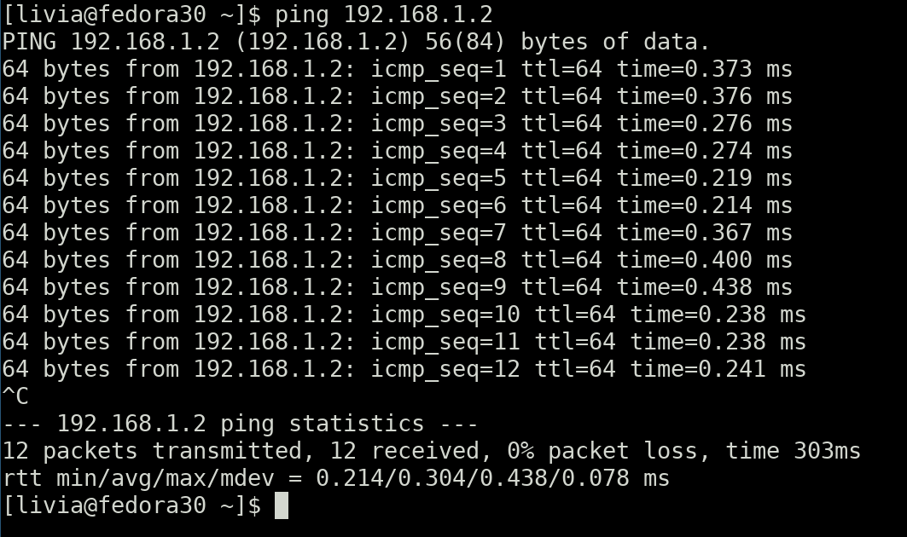
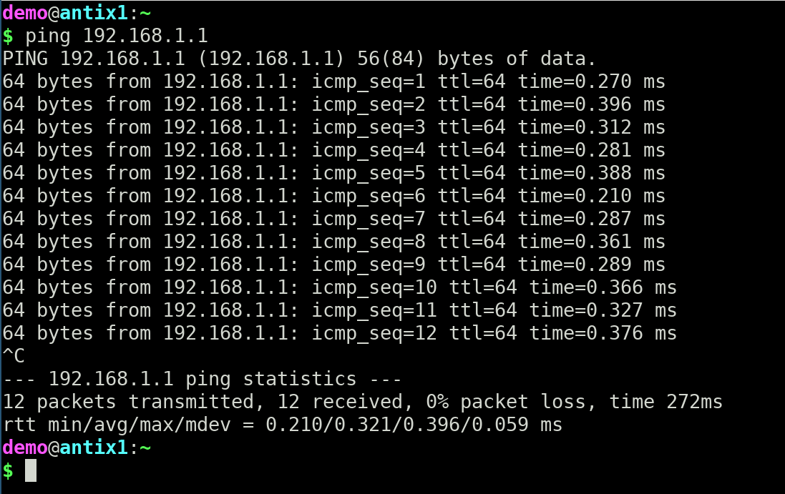
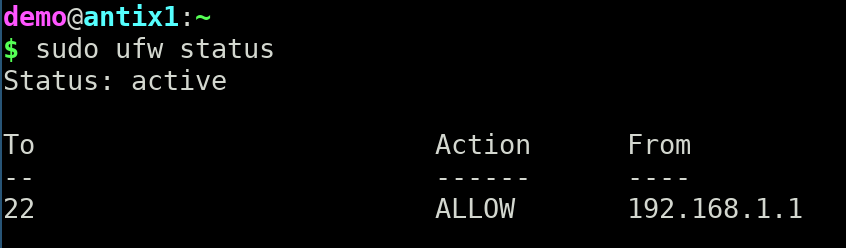

Ever wondered how to connect two computers together without going through a local network (LAN)?
If your computers are on a network, you can share files and folders, but what happens if you don't have a router/switch/hub to make that LAN happen?
In this tutorial I will show you how to use a crossover cable to connect two computers and transfer data.
If you want to hone your cabling skills, you can make your own crossover cable for this tutorial. But if you don't want the trouble of making a cable, just buy a pre-made crossover ethernet cable.
Once you have your cable settled, connect it to the computers.
Even if we had both computers connected to a LAN, we are not using the same network addresses. With the crossover cable we are creating a little peer-to-peer connection, and that is a completely different network. For this case, the best solution is to configure a static IP address for each computer (within that new network we're creating).
Check out the tutorial How to Set Static IP Address in Linux to see it in detail.
Make sure that both computers are on the same subnet (like 192.168.1.1 and 192.168.1.2) and use the same mask (like 255.255.255.248).
There are two possible configuration files in Linux systems (consider enp1s0 and eth0 as Ethernet interfaces):
/etc/sysconfig/network-scripts/ifccfg-enp1s0

/etc/network/interfaces

With that ready you can do the first test: ping ip_address
Example:
ping 192.168.1.1
 
That confirms both sides are connected and seeing each other.
The computers see each other but they can't do anything yet. For that you have to open their conversation by allowing incoming SSH connections from one another.
UFW (Uncomplicated Firewall) is used for managing a Linux firewall.
Open ports on the firewall: using ufw we will open port TCP/22 for the other computer (PC1 to PC2, PC2 to PC1 or both).
To allow incoming SSH connections from a specific IP address named 192.168.1.2, enter:
sudo ufw allow from 192.168.1.2 to any port 22
To enable ufw:
sudo ufw enable
To check the status:
sudo ufw status

If ufw was not enabled the output would be:
sudo ufw statusStatus: inactive
Secure Shell (SSH) is a cryptographic network protocol used for an encrypted connection between a client and a server.
You can enable the SSH server for one or both computers, but the SSH client creates a secure connection only to the machine that have the SSH server daemon (sshd) running.
Check out the tutorial How to setup and use SSH Server on Linux to see it in detail.
For file transfer you can use FileZilla, that runs in server and client versions in different platforms (including Windows, Mac and Linux). Or, if you are using Linux or Mac, SFTP is a good choice.
SFTP (SSH File Transfer Protocol) is a secure file protocol that is used to access, manage, and transfer files over an encrypted SSH connection. SFTP works on a client-server model.
Check out the tutorial SFTP Basic Commands to see it in detail.
In this tutorial scenario, open a SFTP connection to the other computer: use the sftp command followed by the username and the IP address:
sftp demo@192.168.1.2
You will be prompted to enter the user password. Once connected, you will be presented with the sftp prompt, and you can start interacting with the remote server:
Connected to demo@192.168.1.2sftp>
Use get to download files and put to upload.
sftp> get remote_file.txtFetching /home/demo/remote_file.txt to remote_file.txtsftp> put local_file.txtUploading local_file.txt to /home/demo/local_file.txt
In this tutorial you learned how to use a crossover cable to connect two computers running Linux and transfer data using SFTP.